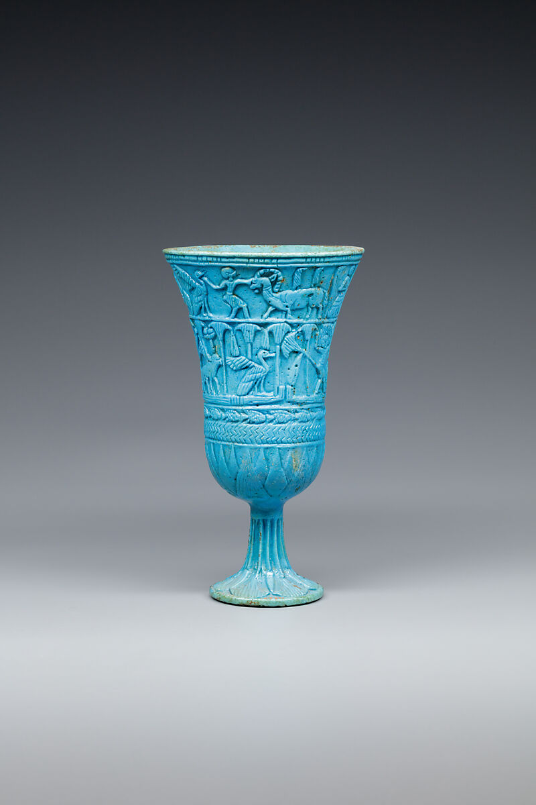

This is a major assessment. This assessment is an evidence task. You will act like a museum researcher: study an ancient object, sort details into meaning categories, and plan an original design inspired by evidence instead of copying.
Connect visible details to possible purpose.
Sort details into communication, identity, daily life, ceremony, or belief.
Use inspiration carefully in an original idea.
Answer with proof.
Standards focus: VA.5.C.3.2, VA.5.H.1.1, VA.5.H.1.3, VA.5.O.2.1, VA.5.S.1.3
You will submit: typed responses, a photo or file of the design/artwork task, and any planning or revision evidence requested below.

Look first. Then answer. Strong assessment answers name details that are actually visible before explaining meaning or purpose.
Try this sentence frame: I can see ___, which suggests ___ because ___.
Plan an original object or flat design inspired by ancient evidence. Choose one focus: communication, identity, daily life, ceremony, or belief. You may use pattern, symbol, object shape, or material ideas, but your final idea must be your own.
Submit in Canvas. Copy the typed responses below into the Canvas text-entry box. Upload a clear photo or file of the artwork/design task separately.
Read your answers one more time. Strong assessment work uses evidence, art vocabulary, and specific choices.